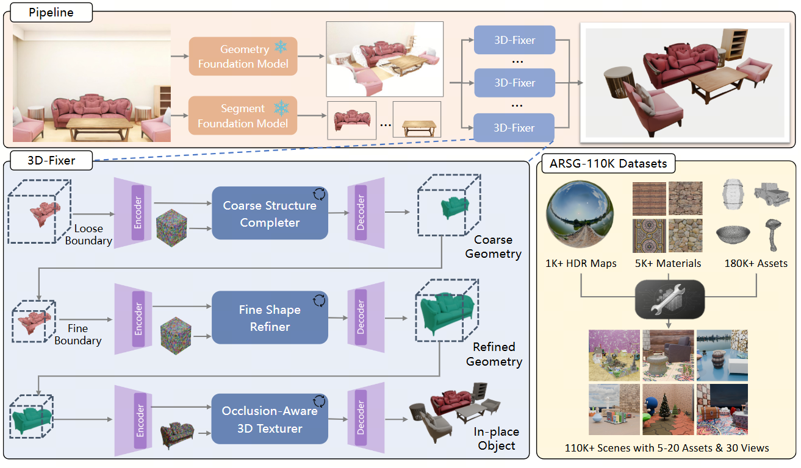

Compositional 3D scene generation from a single view requires the simultaneous recovery of scene layout and 3D assets. Existing approaches mainly fall into two categories: feed-forward generation methods and per-instance generation methods. The former directly predict 3D assets with explicit 6DoF poses through efficient network inference, but they generalize poorly to complex scenes. The latter improve generalization through a divide-and-conquer strategy, but suffer from time-consuming pose optimization. To bridge this gap, we introduce 3D-Fixer, a novel in-place completion paradigm. Specifically, 3D-Fixer extends 3D object generative priors to generate complete 3D assets conditioned on the partially visible point cloud at the original locations, which are cropped from the fragmented geometry obtained from the geometry estimation methods. Unlike prior works that require explicit pose alignment, 3D-Fixer uses fragmented geometry as a spatial anchor to preserve layout fidelity. At its core, we propose a coarse-to-fine generation scheme to resolve boundary ambiguity under occlusion, supported by a dual-branch conditioning network and an Occlusion-Robust Feature Alignment (ORFA) strategy for stable training. Furthermore, to address the data scarcity bottleneck, we present ARSG-110K, the largest scene-level dataset to date, comprising over 110K diverse scenes and 3M annotated images with high-fidelity 3D ground truth. Extensive experiments show that 3D-Fixer achieves state-of-the-art geometric accuracy, which significantly outperforms baselines such as MIDI and Gen3DSR, while maintaining the efficiency of the diffusion process.

Architecture of the 3D-Fixer pipeline and dataset. (Top) Scene Decomposition extracts instance-level partial geometry from the input. (Bottom-left) Progressive Completion generates the full asset via three stages: 1) The Coarse Structure Completer hallucinates topology within a loose bound; 2) The Fine Shape Refiner sharpens geometry within a fine boundary; and 3) The Occlusion-Aware 3D Texturer applies observation-aligned textures. (Bottom-right) Our ARSG-110K Dataset provides high-quality assets and rich scene compositions for training.@inproceedings{yin20263dfixer,
title={3D-Fixer: Coarse-to-Fine In-place Completion for 3D Scenes from a Single Image},
author={Yin, Ze-Xin and Liu, Liu and Wang, Xinjie and Sui, Wei and Su, Zhizhong and Yang, Jian and Xie, jin},
booktitle={Proceedings of the Computer Vision and Pattern Recognition Conference},
year={2026}
}